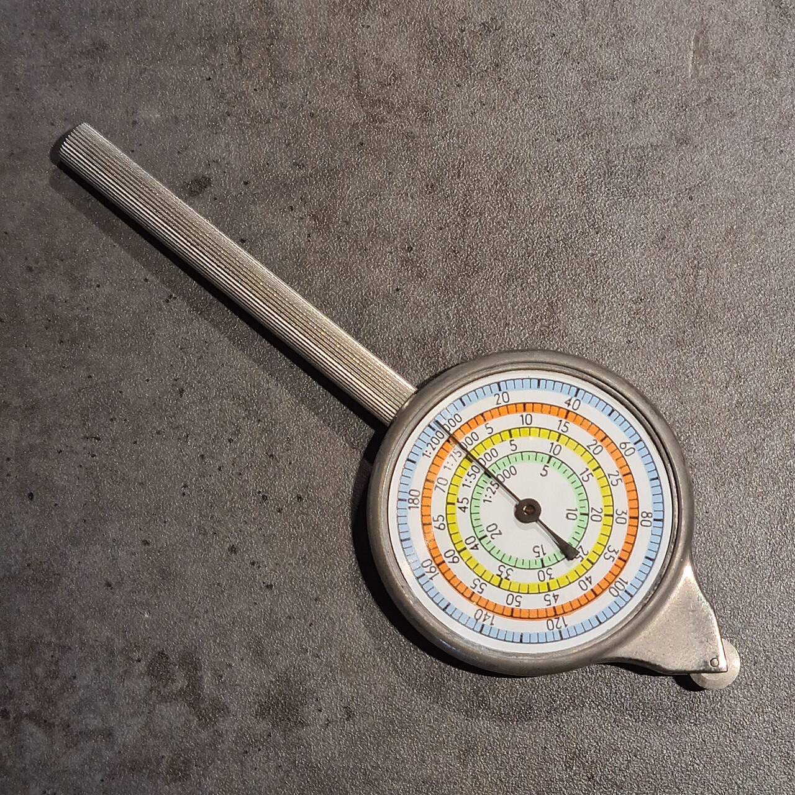
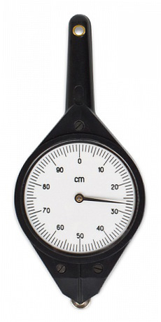
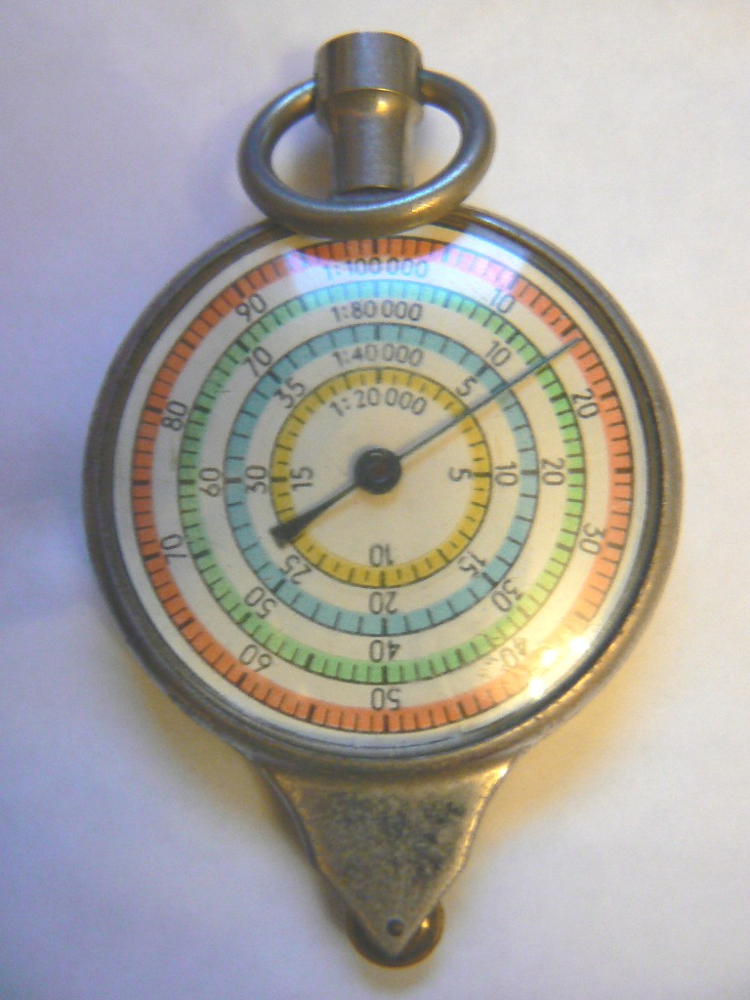

1. Що саме ми вимірюємо?
Між двома точками на карті можна отримати різні числа — і всі вони можуть бути правильними.

Курвіметр (описометр) — прилад для вимірювання довжини кривих ліній на карті. Wikimedia Commons.
2. Оберіть інструмент під форму лінії

Лінійка
Для прямого відрізка між двома точками.

Нитка
Для складного звивистого маршруту, якщо немає курвіметра.
Курвіметр
Коліщатко прокочується вздовж дороги або річки.
3. Пряма відстань
де d — відстань на карті, n — знаменник масштабу.
4. Ламана лінія
Маршрут має чотири прямі ділянки. Виміряйте кожну й складіть.
5. Чому курвіметр кращий за пряму?
Умовна звивиста лінія має пряму відстань між кінцями 7,2 см. Змініть показ курвіметра.
6. Ламаний маршрут проти AB
7. Лабораторія реальної карти
Перетягуйте точки A і B на OpenStreetMap. Обчислюється геодезична відстань по поверхні Землі — вона корисна як «пряма» для порівняння з довжиною маршруту.
Вимір
8. Похибка — це частина вимірювання
Три вимірювання тієї самої кривої дали 8,4 см; 8,6 см; 8,5 см.
9. Алгоритм без плутанини
- Визначте, що треба: пряма чи маршрут.
- Подивіться на форму лінії.
- Оберіть лінійку, циркуль, нитку або курвіметр.
- Виміряйте довжину на карті.
- Застосуйте масштаб.
- Перевірте одиниці.
- Для кривої — повторіть вимірювання.
10. Коротке відео: як вимірювати відстань на карті
Навігаційна демонстрація роботи зі шкалою компаса та вимірюванням відстаней.
11. Підсумок CER
Проблема: треба визначити реальну довжину звивистого туристичного маршруту на карті. Який метод буде найнадійнішим?
12. Домашнє завдання
Опрацювати матеріал підручника про вимірювання відстаней на карті.
Електронний підручник: Географія, 6 клас, Запотоцький та ін., 2023 →
- Оберіть на паперовій або електронній карті два об’єкти.
- Оцініть пряму відстань.
- Потім виміряйте реальний ламаний/звивистий маршрут.
- Запишіть різницю у відсотках і поясніть її.